Inhalt Index DeskTop Bronstein

 Integralrechnung Mehrfachintegrale Doppelintegral Berechnung des Doppelintegrals
Integralrechnung Mehrfachintegrale Doppelintegral Berechnung des Doppelintegrals


Die Koordinaten sind in Parameterform durch die Beziehungen
| 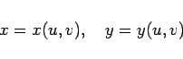 | (8.138) |
definiert. Das Flächenstück wird durch die Koordinatenlinien u = const und v = const in infinitesimale Flächenelemente eingeteilt (s. Abbildung) und der Integrand in den Koordinaten u und v ausgedrückt.
Summiert wird zuerst längs eines Koordinatenstreifens, z.B. längs v = const, danach über alle Streifen:
Dabei sind v = v1(u) bzw. v = v2(u) die Gleichungen der inneren bzw. äußeren Randkurve 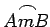 und 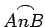 der Fläche  . Mit u1 und u2 werden die Koordinaten der beiden äußersten Linienbegrenzungen der Fläche S beschrieben. Mit |D| ist der Absolutbetrag der Funktionaldeterminante
. Mit u1 und u2 werden die Koordinaten der beiden äußersten Linienbegrenzungen der Fläche S beschrieben. Mit |D| ist der Absolutbetrag der Funktionaldeterminante
| 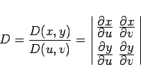 | (8.140a) |
bezeichnet, mit deren Hilfe das Flächenelement in krummlinigen Koordinaten beschrieben wird:
| 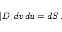 | (8.140b) |
Die Formel (8.137b) ist ein Spezialfall von Formel (8.139) für die Polarkoordinaten 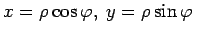. Die Funktionaldeterminate ergibt sich hier zu  .
.
Man wählt die krummlinigen Koordinaten derart, daß die Integrationsgrenzen des Integrals (8.139) möglichst einfach werden.
| Beispiel |
|
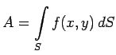 ist für den Fall zu berechnen, daß S der Flächeninhalt der Astroide ist, mit 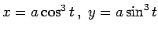 (s. Abbildung). |
Zuerst werden die krummlinigen Koordinaten 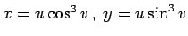 eingeführt, deren Koordinatenlinien u = c1 eine Schar ähnlicher Astroiden mit den Gleichungen 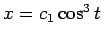 und 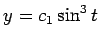 darstellen. Die Koordinatenlinien v = c2 sind dann Strahlen mit der Gleichung 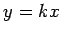, wobei 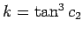 gilt. Damit ergibt sich
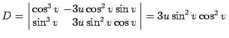,
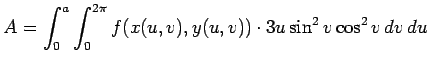.